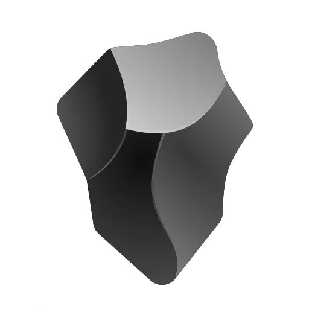
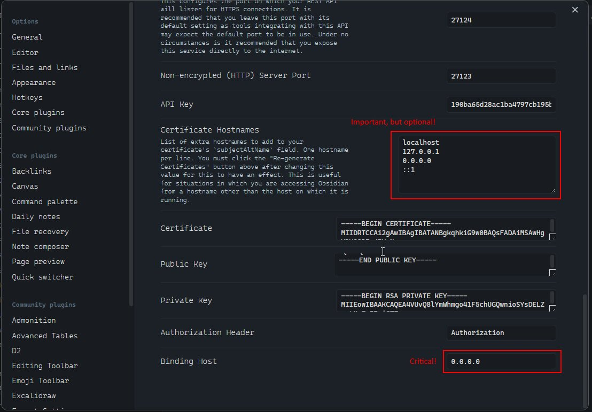

MCP Obsidian Server
Quick setup guide for running the MCP Obsidian server
Quick setup guide for running the MCP Obsidian server
Loading screenshots...
Install and run Obsidian Desktop Application and enable the Local REST API plugin in Settings.
Make sure to configure the API to listen on all interfaces (not just localhost), which is critical for WSL2 setup.
Important: Copy the API Key from Obsidian Settings, you'll need it for MCP configuration.
Create or update your MCP configuration file with the following:
{
"mcpServers": {
"obsidian": {
"command": "docker",
"args": [
"run",
"--name", "mcp-obsidian-windsurf", // optional
"--interactive",
"--rm",
"-e", "API_KEY",
"-e", "API_HOST", // optional
"-e", "API_PORT", // optional
"-e", "DEBUG", // optional
"ghcr.io/oleksandrkucherenko/obsidian-mcp:latest"
],
"env": {
"API_KEY": "{secret_key}", // required
"API_HOST": "https://172.26.32.1", // default: https://localhost
"API_PORT": "27124", // default: 27124
"DEBUG": "mcp:*" // default: disabled logs
}
}
}
}Replace {secret_key} with the API Key you copied from Obsidian.
For WSL2 users, use your Windows host IP as API_HOST (typically something like 172.26.32.1).
# Verify that the port is listening
netstat -an | findstr 27124 # Windows CMD
# Test the API connection
curl --insecure https://localhost:27124# Get Windows host IP
export WSL_GATEWAY_IP=$(ip route show | grep -i default | awk '{ print $3}')
echo $WSL_GATEWAY_IP
# Test the API connection
curl --insecure https://$WSL_GATEWAY_IP:27124# check is port is listening
ss -tuln | grep ':27124'
# Test the API connection
wget --no-check-certificate -S https://localhost:27124# check is port is listening
sudo lsof -iTCP:27124 -sTCP:LISTEN
# Test the API connection (Httpie)
http --verify=no https://localhost:27124Expected successful response:
{
"status": "OK",
"manifest": {
"id": "obsidian-local-rest-api",
"name": "Local REST API",
/* other manifest details... */
},
"service": "Obsidian Local REST API",
"authenticated": false
}Ensure your firewall allows connections on port 27124:
# Add firewall rule (Run in Admin PowerShell)
New-NetFirewallRule -DisplayName "WSL2 Obsidian REST API" -Direction Inbound -LocalPort 27124 -Protocol TCP -Action AllowYou can now run the MCP server using Docker:
docker run --name mcp-obsidian-windsurf \
--interactive \
--rm \
-e API_KEY="your-api-key" \
-e API_HOST="https://your-host-ip" \
-e API_PORT="27124" \
-e DEBUG="mcp:*" \
ghcr.io/oleksandrkucherenko/obsidian-mcp:latestDocker arguments explained:
--rm - Automatically remove the container when it exits--interactive - Keep STDIN open-e, --env - Set environment variablesTo test connectivity from a Docker container:
# Get Windows host IP
export WSL_GATEWAY_IP=$(ip route show | grep -i default | awk '{ print $3}')
echo $WSL_GATEWAY_IP # expected something like: 172.26.32.1
# Run a test container shell
docker run --rm -it --network=host busybox sh
Inside the container shell:
# Inside the container shell
export WINDOWS_HOST_IP="172.26.32.1" # Replace with your host IP
wget -qO- --no-check-certificate "https://$WINDOWS_HOST_IP:27124"To temporarily disable Windows Firewall for testing (not recommended for regular use):
# Run in Admin PowerShell
Set-NetFirewallProfile -Profile Domain,Public,Private -Enabled False
# Remember to re-enable after testing
Set-NetFirewallProfile -Profile Domain,Public,Private -Enabled True